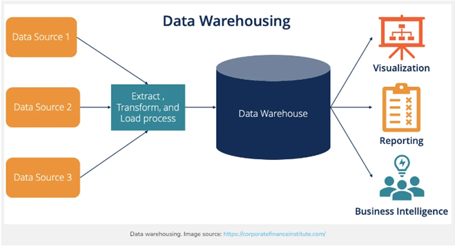
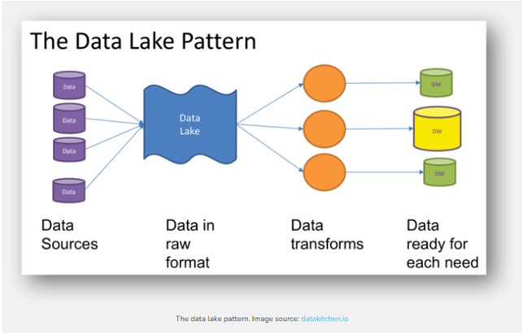
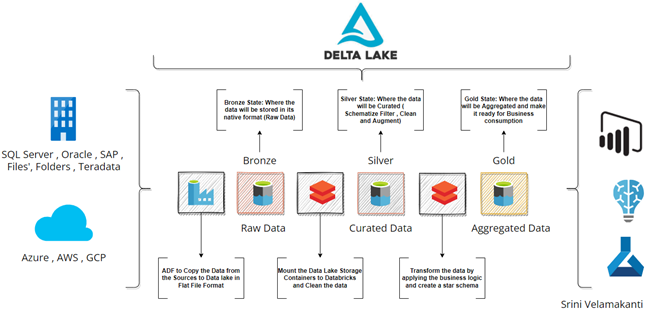

Data Warehouse
A data warehouse is perhaps the most common data architecture you will see at companies. It is a repository
for storing large amounts of data from multiple sources within an organization. In general, data warehouses
store historical data and are organized in a relational database management system.
Data warehouses go through the ETL process so that individuals who need to work with the data have it in
a prepared fashion. This means the data is cleaned and ready for production right out of the box.

Within a data warehouse we can also have a transactional database. In general, you will never touch a
transactional database as this is where production is run. Any kind of error or bug may bring down
production. Transactional databases stores day to day operations and uses INSERT and UPDATE
statements.
The benefits of a data warehouse would be that storing data in this manner gives improvement to
standardization - consistent formatting of tables, quality - a clear set of instructions as to
how the data is set-up, and consistency. It will also increase the speed at which analytics and
business intelligence can flow.
There are some draw backs to data warehouses as well such as lack of flexibility. Due to their
nature, they excel with structured data but struggle with semi and unstructured data. They also
have a high implementation costs.
Snowflake Data Warehouse
Snowflake is a data warehouse that allows for storage, processing, and analysis that are
more flexible than traditional offerings. A huge draw to Snowflake is its separation of compute
and storage. This allows organizations to scale dynamically and can lower the overall cost of
the data warehouse.
Data Lake
A data lake is a highly flexible storage repository that stores structured and unstructured data in
its raw, unformatted form. In contrast to a data warehouse which stores cleaned data, a data lake
uses a flat architecture and organizes its contents in their raw form. Data lakes are very flexible
and cost-effective which still giving an organization the ability to gain insight from their data.
With data lakes, the data follows an ELT schema rather than the ETL of the data warehouse. This means
that data is loaded into the data center in its raw, untouched, unaltered form. Due to this there
is large flexibility if the data being pulled. Due to this, data lakes are generally better for
machine learning and data science.

There are some drawbacks to data lakes. Due to its unformatted and unstructured nature, its
performances is significantly lower than a data warehouse for data analytics and business
intelligence uses. It also lacks reliability and security. Since the data in data lakes are
stored in a raw format it is difficult to enforce consistency. Also, because data lakes
support all data formats, it is difficult to implement proper security measures.
Snowflake Data Lake
Snowflake can operate as both a data warehouse and a data lake. It has native support
for both structured and unstructured data making it an excellent tool for organizations
needing a one and done solution.
Delta Lake
Delta lakes are a relatively new concept and is yet to be widely adopted. It essentially provides
reliability to the data lake architecture. They support ACID transactions, rollbacks, and unified
streaming and batch data processing. Delta lakes run onto of pre-existing data lakes. In short,
delta lakes take some of the best properties of a data warehouse and lay them onto of a data lake
resulting in an extremely dynamic and robust data system.
Delta lakes are also separated into different tiers. The bronze tier offers a storage solutions
for the raw data. We then move up to the silver tier which the data is cleaned and placed in a
schema. At the gold tier, the data is ready for production and can be pulled and used immediately.

The downside to the delta lake architecture is that you must maintain two system which can be
expensive for an organization. Since you have a data lake as the base and a delta lake overlay,
you need admins to maintain both systems else you risk failure.
Databricks
Databricks offers a delta lake architecture that is just a storage layer over their data lake
system. It is compatible with the Apache Spark APIs which allows for very robust operations
over the organizations data.
Exercise: Setting up Snowflake
1. Now that you know the main data architectures lets set-up a Snowflake environment. Navigate to
the Snowflake website. In the top right corner, there is a “start for free” button”, click it.
2. Next you will want to fill out your information and click continue.
3. On the next panel you will be greeted with multiple options to select from. I recommend selecting the standard edition of Snowflake.
Although it is unlikely you will use the free $400 of resources, on the other two options it is more likely to consume the
credits at a faster rate. For your cloud provider choose Amazon Web Services. Lastly select the server that is nearest to you.
Finally, click “Get started”.
4. Once you've finished signing up you will need to active your account before you are able to log into Snowflake. Check the email
you signed-up with. You should have received a link. Click it and create a Username and Password.
5. Once you are successfully logged in you will be greeted with home page.
6. From the home page, navigate to “Databases”.
7. Hit “Create” and name your database.
8. Now that your database is created, it should show up in the list of databases available. Click on it. In the top right there
is a “create” button. Select this and let's recreate the employee table from the SQL section. As a note, do not forget to
alter the value next to VARCHAR. Otherwise, the creation will throw an error.
9. Next let's create a warehouse. To create a warehouse, you should follow similar instructions as when we created the database. Select a name,
size should be the smallest one possible for this example I chose X-Small. Leave the rest of the settings as default.
10. You will need to download the SnowflakeCLI.
This will allow you to access Snowflake from the command line.
11. In a Snowflake worksheet (or a text editor) create a table to store your data in. I would recommend to have all the data types
for each column to be set to VARCHAR for now. This is a RAW table and for data ingestion purposes will help us later. We will fix
this at a later stage.
12. Using the Snowflake CLI we can access Snowflake from a terminal. Here, we will create a connection with our Snowflake instance.
To do so, we will need a few things: Snowflake Account ID, Snowflake Username, and Snowflake Password. Your Account ID is the string
Presented to you when logging into Snowflake. On the command line run the command below to create a connection:
snowsql -a <account_id> -u <username> *hit enter and then input your password*
13. Use the 'USE' command to assign a schema schema(if working outside PUBLIC SCHEMA), data warehouse, and database.
14. We will need to create a staging area for our
data to be able to be imported into Snowflake.
15. Using the PUT command you can place the CSV file into
your staging area.
16. Using the COPY command, copy the staged file to a new table in Snowflake.
17. Run a SQL query to ensure the new table has been populated correctly.